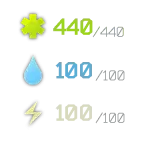

Game Panel HUD
- Downloads
- 522,352
- Favourites
- 146
- Mod lists
- 216
Highly Customizable, modular, Integrated HUD Extension system
You can toggle any panel as desired
This Mod REQUIRES KmyTarkovApi 1.4.0 or later, You MUST install it
Extract BepInEx folder to client directory
Make and Update Mods takes a lot of my free time
You can support me on one of the below websites, this keeps me motivated doing modding work for you
Hey, would you like to try out the Preview version and help make this project better?
Join Discord to get Preview version and chat with developer
Version
3.4.0
Compatible SPT-Aki 4.0.0
Immersion Compass not working is not with GPH issue, Big Silly Goose corrupted the MK2 compass again in an update. I don’t plan to fix this issue caused by Big Silly Goose.
Dependencies
Version
3.3.0
Update EFTApi to KmyTarkovApi dependency
Stop support for old versions (2.3.1-3.10.0)
Start 3.11.0 + support
Version
3.2.0
Version
3.1.1
Compatible SPT-Aki 3.9.0
Please update your EFTApi to 1.2.2